01
Held the line through COVID
Contracts fell away and annual revenue dropped sharply. I rebuilt the website from the ground up and put in search engine optimisation, geofencing and online advertising. Growth came back.
Tollesboro, Kentucky
I am president of JSB Industrial Solutions, the company behind the Economy Ball Mill product line. We build the large rotating mills that crush, grind and process material for mining, mineral processing, recycling, construction materials, rare earth mineral recovery and advanced manufacturing.
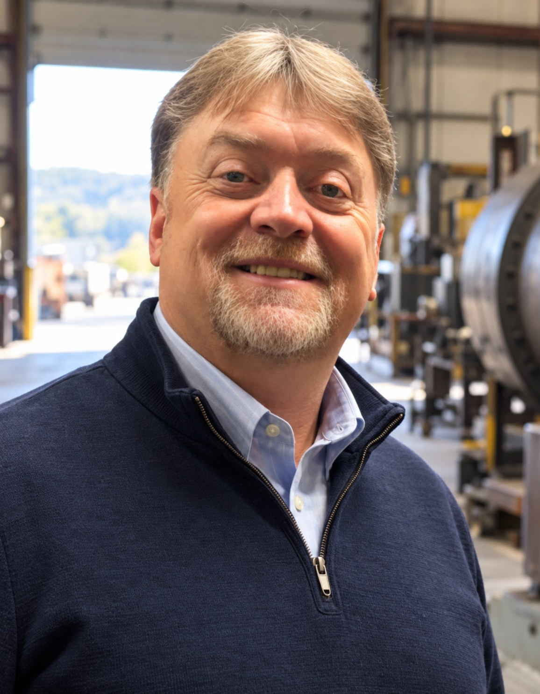
About
Economy Ball Mill has been built in the United States for more than seventy years. It began in the 1950s as Economy Manufacturing, merged with Crossley somewhere between the 1970s and the early 1990s, and became the Economy Ball Mill Company. I acquired the line and run it today from Tollesboro, Kentucky, as a domestic answer in the pulverization industry. I have led the company for more than a decade.
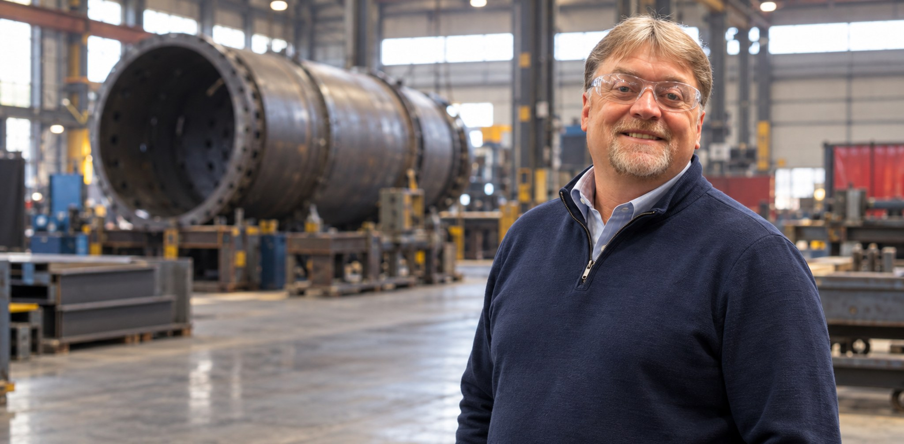
01
Contracts fell away and annual revenue dropped sharply. I rebuilt the website from the ground up and put in search engine optimisation, geofencing and online advertising. Growth came back.
02
We completed construction of a new manufacturing facility in early 2026 and converted the old building into a full scale laboratory, so testing now sits alongside the shop.
03
The equipment now serves rare earth minerals processing, where demand is rising for machines that reduce material to 65 microns for microchip manufacturing.
In my own words
“This is a regional event. Eastern Kentucky and Lewis County, in particular, are open for business.”
“I’ve sold equipment to Australia, Belgium, Romania, Mexico, and Canada.”
“The equipment that we make makes a difference.”
Quoted in the Lewis County Herald, 15 May 2026.
Work
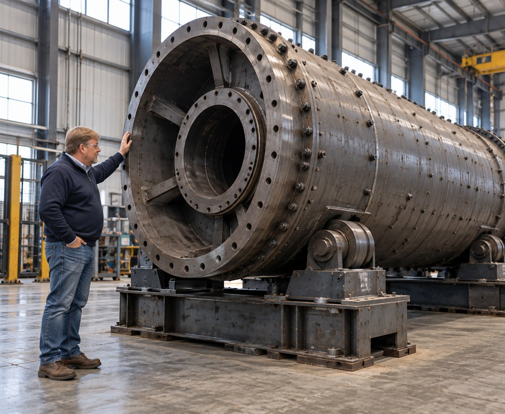
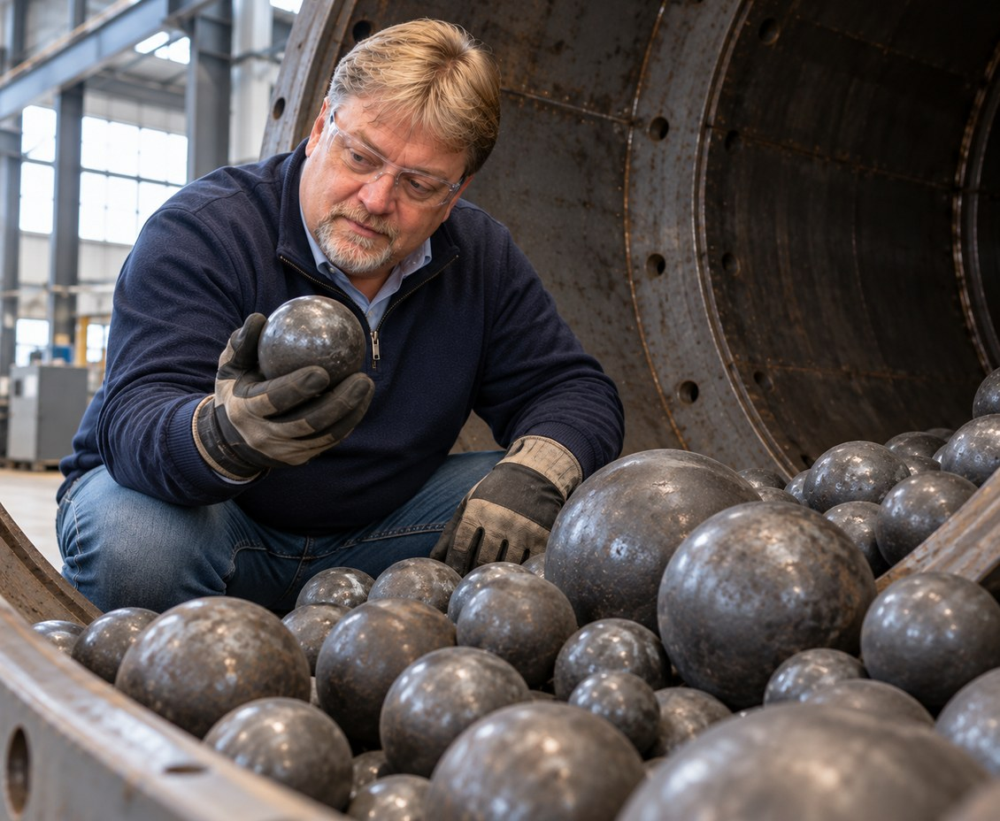
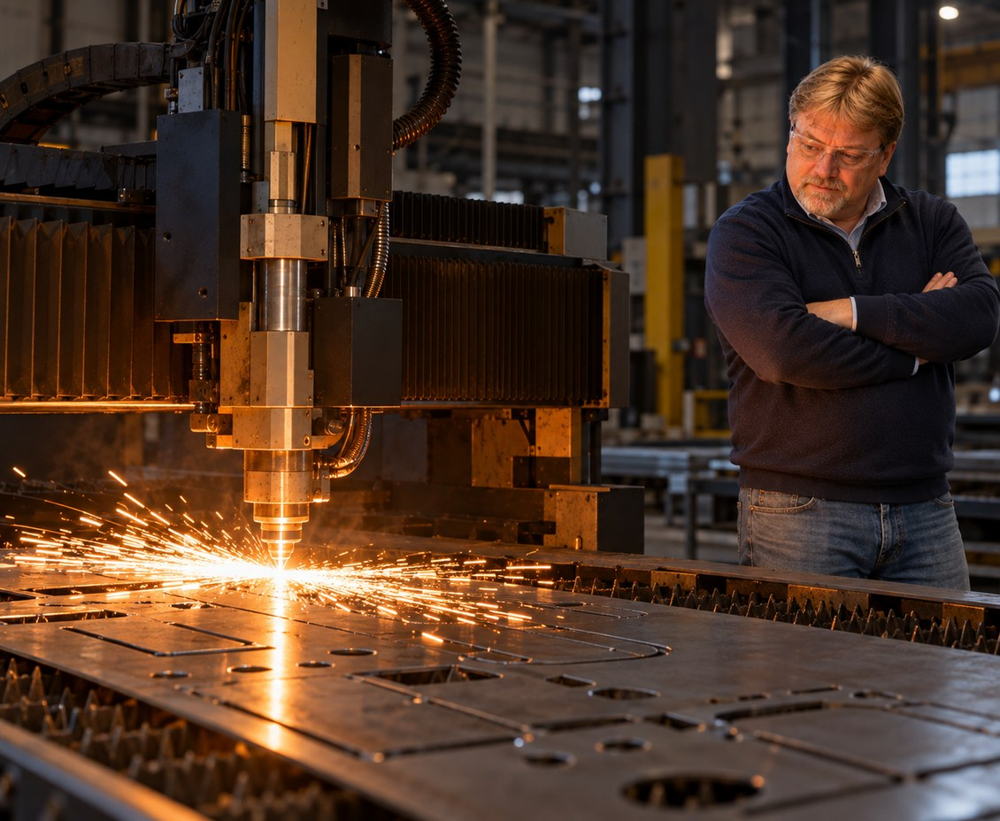
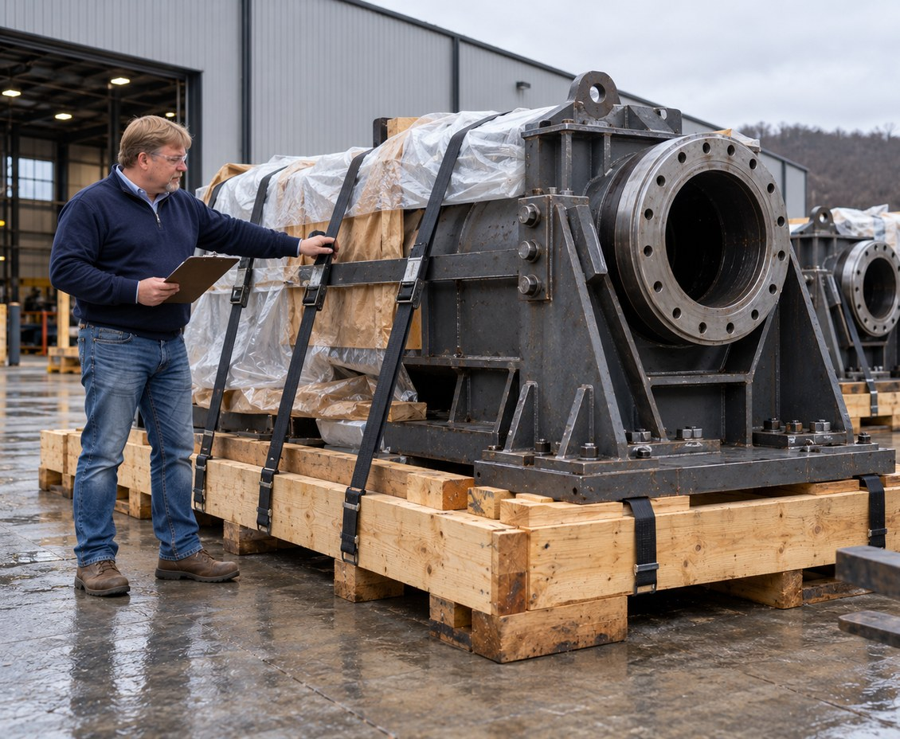
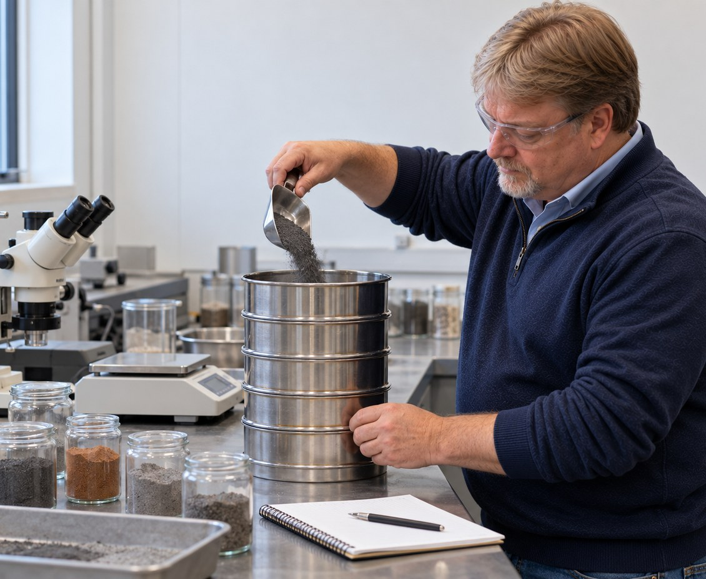
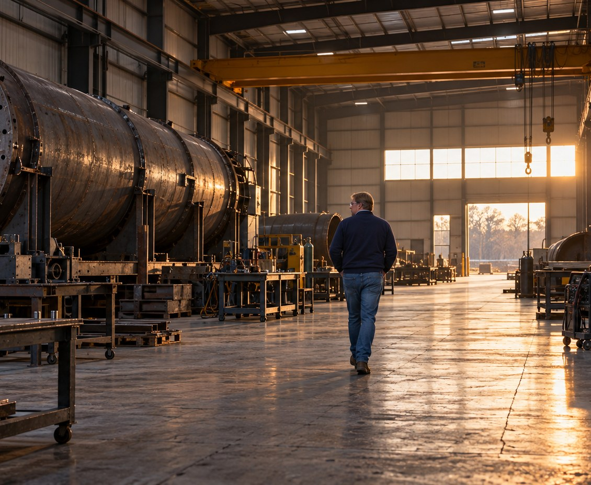
Capabilities
Day to day I handle major components and purchasing, sales and general management, work coordination, customer relationships, laboratory testing operations and work schedules.
Recent
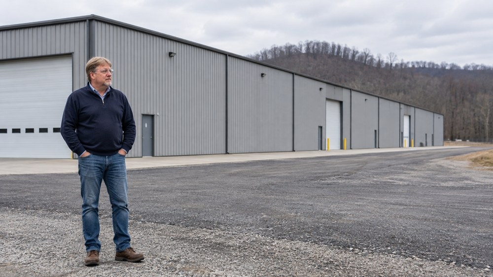
Construction finished in early 2026. The building we moved out of became a full scale laboratory, which means material testing and production now sit on the same site.
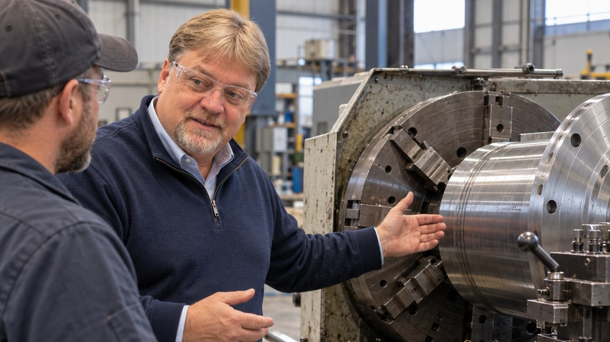
On 1 May 2026 we opened the Tollesboro plant to the region. The Lewis County Herald covered the day.
Background
I spent roughly five years in mining, working as a blasting, drilling, roof control and heavy equipment operator. After that I worked as a production technician in the paper industry, where a tuition reimbursement scheme paid for my study.
I hold an associate degree in applied science from the Kentucky Community and Technical College System, awarded in 2009, and a bachelor’s degree in technology management and a master’s degree in engineering management, both from Morehead State University. I credit the push toward running my own business to the faculty there, and to Dr. Ahmad Zargari in particular.
Acquiring Economy Ball Mill was not luck. I worked out a five point framework for judging an acquisition and used it to find the company.
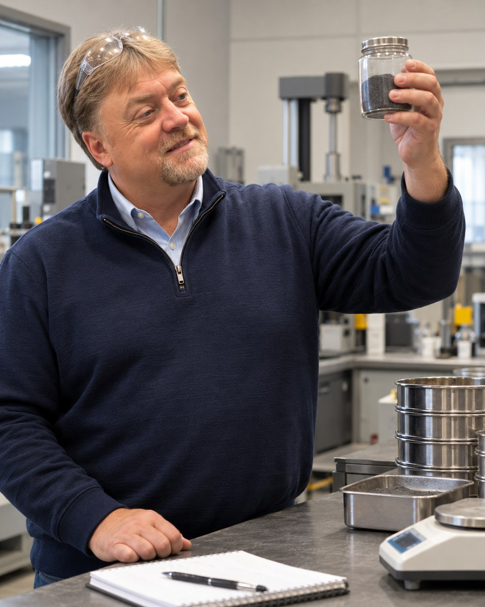
Community
My hometown is about fifteen thousand people spread across five hundred square miles. I renovated the baseball field my children played on, with new bases, fencing and utility fields, and I matched a five thousand dollar donation so the high school football team could have knee braces.
Contact
If you have a material, a throughput and a target particle size, that is enough to start a conversation. Send it over and I will come back to you.
JSB Industrial Solutions, INC